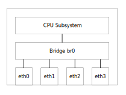
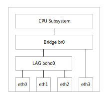

Bridge Configuration
A switchdev enabled switch does not contain any bridge by default. All network interfaces works as standard Ethernet devices.
Use the ip link add command to create a bridge called br0:
# ip link add name br0 type bridge
| It is not possible to create more than one bridge at a time on Microchip switch products. |
A bridge is VLAN-unaware by default, which means that it doesn’t recognizes VLAN tags. If the bridge should recognize VLAN tags and be able to insert/remove VLAN tags, it must be configured to be VLAN-aware:
# ip link set br0 type bridge vlan_filtering 1
To change the bridge back to be VLAN-unaware:
# ip link set br0 type bridge vlan_filtering 0
Add the interfaces that should be part of the bridge:
# ip link set eth0 master br0
Enable the interfaces and the bridge:
# ip link set eth0 up # ip link set br0 up
Use the ip link del command to delete a bridge:
# ip link del name br0
The command above removes the interfaces from the bridge automatically but you can also remove them manually:
# ip link set dev eth0 nomaster
The following commands will create a vlan-aware bridge with four interfaces:
# ip link add name br0 type bridge # ip link set br0 type bridge vlan_filtering 1 # ip link set eth0 master br0 # ip link set eth1 master br0 # ip link set eth2 master br0 # ip link set eth3 master br0 # ip link set eth0 up # ip link set eth1 up # ip link set eth2 up # ip link set eth3 up # ip link set br0 up
The bridge created above can be illustrated like this:

To see information about the interfaces:
# ip link show
1: lo: <LOOPBACK,UP,LOWER_UP> mtu 65536 qdisc noqueue state UNKNOWN mode DEFAULT group default qlen 1000
link/loopback 00:00:00:00:00:00 brd 00:00:00:00:00:00
3: eth0: <BROADCAST,MULTICAST,UP,LOWER_UP> mtu 1500 qdisc mq master br0 state UP mode DEFAULT group default qlen 1000
link/ether 00:40:42:04:98:9b brd ff:ff:ff:ff:ff:ff
4: eth1: <BROADCAST,MULTICAST,UP,LOWER_UP> mtu 1500 qdisc mq master br0 state UP mode DEFAULT group default qlen 1000
link/ether 00:40:42:04:98:9c brd ff:ff:ff:ff:ff:ff
5: eth2: <BROADCAST,MULTICAST,UP,LOWER_UP> mtu 1500 qdisc mq master br0 state UP mode DEFAULT group default qlen 1000
link/ether 00:40:42:04:98:9d brd ff:ff:ff:ff:ff:ff
6: eth3: <BROADCAST,MULTICAST,UP,LOWER_UP> mtu 1500 qdisc mq master br0 state UP mode DEFAULT group default qlen 1000
link/ether 00:40:42:04:98:9e brd ff:ff:ff:ff:ff:ff
7: sit0@NONE: <NOARP> mtu 1480 qdisc noop state DOWN mode DEFAULT group default qlen 1000
link/sit 0.0.0.0 brd 0.0.0.0
8: br0: <BROADCAST,MULTICAST,UP,LOWER_UP> mtu 1500 qdisc noqueue state UP mode DEFAULT group default qlen 1000
link/ether 00:40:42:04:98:9b brd ff:ff:ff:ff:ff:ff
To see information about the bridge:
# bridge link show 3: eth0: <BROADCAST,MULTICAST,UP,LOWER_UP> mtu 1500 master br0 state forwarding priority 32 cost 4 4: eth1: <BROADCAST,MULTICAST,UP,LOWER_UP> mtu 1500 master br0 state forwarding priority 32 cost 4 5: eth2: <BROADCAST,MULTICAST,UP,LOWER_UP> mtu 1500 master br0 state forwarding priority 32 cost 4 6: eth3: <BROADCAST,MULTICAST,UP,LOWER_UP> mtu 1500 master br0 state forwarding priority 32 cost 4
1. IP address
To allow communication between the CPU and hosts on any of the bridge ports, it is necessary to assign an IP address to the bridge itself and NOT to the individual interfaces.
To assign an IP address on the bridge itself and check the status:
# ip addr set dev br0 192.168.1.1
# ip addr show dev br0
8: br0: <BROADCAST,MULTICAST,UP,LOWER_UP> mtu 1500 qdisc noqueue state UP group default qlen 1000
link/ether 00:00:00:01:00:00 brd ff:ff:ff:ff:ff:ff
inet 192.168.1.1/24 scope global br0
valid_lft forever preferred_lft forever
inet6 fe80::cc8f:1ff:fe4b:10c9/64 scope link
valid_lft forever preferred_lft forever
It is now possible to ping hosts on the same subnet:
# ping 192.168.1.2 PING 192.168.1.2 (192.168.1.2) 56(84) bytes of data. 64 bytes from 192.168.1.2: icmp_seq=1 ttl=64 time=0.700 ms 64 bytes from 192.168.1.2: icmp_seq=2 ttl=64 time=0.270 ms 64 bytes from 192.168.1.2: icmp_seq=3 ttl=64 time=0.257 ms 64 bytes from 192.168.1.2: icmp_seq=4 ttl=64 time=0.266 ms ^C --- 192.168.1.2 ping statistics --- 4 packets transmitted, 4 received, 0% packet loss, time 3077ms rtt min/avg/max/mdev = 0.257/0.373/0.700/0.188 ms
2. VLAN
If a bridge is VLAN-aware it is possible to assign a port to one or more VLANs. By default all ports are member of VLAN 1:
# bridge vlan show port vlan-id eth0 1 PVID Egress Untagged eth1 1 PVID Egress Untagged eth2 1 PVID Egress Untagged eth3 1 PVID Egress Untagged br0 1 PVID Egress Untagged
A VLAN can be associated with the following flags:
-
PVID- Port VID. Untagged frames received at ingress are assigned to this VLAN. -
Egress Untagged- Untag on egress. Frames in this VLAN are sent as untagged at egress.
Both PVID and Egress Untagged can only be assigned to one VLAN at a time, but it does not need to be the same VLAN.
Add VLAN 100 on eth0:
# bridge vlan add dev eth0 vid 100
Delete VLAN 100 on eth0:
# bridge vlan del dev eth0 vid 100
If you want to assign PVID and/or Egress Untagged to a new VLAN you must first delete the VLAN that currently own the flags.
If you want to keep the old VLAN you must add it again without the flags:
# bridge vlan del dev eth0 vid 1
# bridge vlan add dev eth0 vid 1
# bridge vlan add dev eth0 vid 100 pvid untagged
# bridge vlan del dev eth1 vid 1
# bridge vlan add dev eth1 vid 1
# bridge vlan add dev eth1 vid 100 pvid untagged
# bridge vlan show
port vlan-id
eth0 1
100 PVID Egress Untagged
eth1 1
100 PVID Egress Untagged
eth2 1 PVID Egress Untagged
eth3 1 PVID Egress Untagged
br0 1 PVID Egress Untagged
If you want the CPU on the switch to be part of a VLAN you must add the VLAN to the bridge interface:
# bridge vlan del dev eth0 vid 1
# bridge vlan add dev eth0 vid 1
# bridge vlan add dev eth0 vid 100 pvid untagged
# bridge vlan del dev eth1 vid 1
# bridge vlan add dev eth1 vid 1
# bridge vlan add dev eth1 vid 100 pvid untagged
# bridge vlan del dev br0 vid 1 self
# bridge vlan add dev br0 vid 1 self
# bridge vlan add dev br0 vid 100 pvid untagged self
# bridge vlan show
port vlan-id
eth0 1
100 PVID Egress Untagged
eth1 1
100 PVID Egress Untagged
eth2 1 PVID Egress Untagged
eth3 1 PVID Egress Untagged
br0 1
100 PVID Egress Untagged
You must use the keyword self when assigning a VLAN to a bridge because it’s the bridge itself.
|
3. MAC table
The MAC table, also known as the Forwarding Data Base (FDB), contains entries that map the [MAC addresse, VID] tupple to a port.
If the bridge is configured to be VLAN-unaware, the VID is 1 by default and does not need to be specified in any of the MAC table commands.
The MAC table consists of different kind of entries and will normally be one of:
-
permanent- Assigned by the system - e.g. the MAC address of an interface. -
static- Assigned by the user. -
dynamic- Learned on one of the network interfaces and subject to ageing.
To add a static MAC entry:
# bridge fdb add 00:11:11:11:11:11 dev eth1 vlan 1 master static
To delete a static MAC entry:
# bridge fdb del 00:11:11:11:11:11 dev eth1 vlan 1 master static
Dynamic MAC address entries are removed from the MAC table if the bridge has not seen the MAC address after a specific amount of time.
This time is called the ageing time and is 300 seconds by default.
To change the ageing time to 600 seconds:
# ip link set br0 type bridge ageing_time 600
To show the content of the MAC table:
# bridge fdb show 00:22:22:22:22:22 dev eth0 vlan 1 extern_learn offload master br0 00:40:42:04:98:9b dev eth0 master br0 permanent 01:00:5e:00:00:01 dev eth0 self permanent 00:11:11:11:11:11 dev eth1 vlan 1 master br0 static 00:40:42:04:98:9c dev eth1 vlan 1 master br0 permanent 00:40:42:04:98:9c dev eth1 master br0 permanent 01:00:5e:00:00:01 dev eth1 self permanent 00:40:42:04:98:9b dev eth2 vlan 1 offload master br0 00:40:42:04:98:9d dev eth2 vlan 1 master br0 permanent 00:40:42:04:98:9d dev eth2 master br0 permanent 01:00:5e:00:00:01 dev eth2 self permanent 00:40:42:04:98:9e dev eth3 vlan 1 master br0 permanent 00:40:42:04:98:9e dev eth3 master br0 permanent 01:00:5e:00:00:01 dev eth3 self permanent 01:00:5e:00:00:6a dev br0 self permanent 01:00:5e:00:00:01 dev br0 self permanent
Static entries are marked as static and dynamic entries are market as extern_learn offload.
4. Mirroring
Mirroring is used to send a copy of received or transmitted frames seen on one or more ports to a monitor port. This is useful for debugging of network problems.
Mirroring is controlled by a combination of tc qdisc and tc filter commands.
See also the TC Introduction page for a general introduction to tc commands.
Mirroring all ingress traffic on port eth0 to monitor port eth3:
# tc qdisc add dev eth0 clsact # tc filter add dev eth0 ingress prio 1 handle 1 matchall skip_sw \ action mirred egress mirror dev eth3
To delete the mirroring above:
# tc filter del dev eth0 ingress prio 1 handle 1 matchall # tc qdisc del dev eth0 clsact
Mirroring all egress traffic on port eth1 to monitor port eth3:
# tc qdisc add dev eth1 clsact # tc filter add dev eth1 egress prio 1 handle 1 matchall skip_sw \ action mirred egress mirror dev eth3
To delete the mirroring above:
# tc filter del dev eth1 egress prio 1 handle 1 matchall # tc qdisc del dev eth1 clsact
It is not possible to use more than one monitor port. The tc filter command will fail if you try to configure a second monitor port.
|
It is also possible to mirror selected ingress traffic on a port and this is described on the ACL (IS2) page.
5. Link Aggregation
Link Aggregation is a way of combining two or more ports to act as a single port.
It can be used to increase the throughput of a link or to provide redundancy.
The ports that are combined are called a Link Aggregation Group (LAG).
Link Aggregation is implemented by using bond interfaces on Microchip switch products.
Two different modes are supported:
-
balance-xor- Select the egress interface by xor-ing different parts of the packet selected by the Transmit Hash Policy -
802.3ad- Same as above supplemented with running the LACP protocol which actively checks the connectivity between the links.
To create a bond interface called bond0:
# ip link add name bond0 type bond
Configure the bond interface to check link status on associated links every 100 milliseconds:
# ip link set bond0 type bond miimon 100
Configure the bond interface to use balance-xor mode:
# ip link set bond0 type bond mode balance-xor
Or configure the bond interface to use 802.3ad mode:
# ip link set bond0 type bond mode 802.3ad # ip link set bond0 type bond lacp_rate fast
The LACP hello rate lacp_rate can be set to one of the following values:
-
slow- Check the link connectivity every 30 seconds. -
fast- Check the link connectivity every second.
Configure the Transmit Hash Policy to use fields from both layer 2 and 3 in the xor algorithm:
# ip link set bond0 type bond xmit_hash_policy layer2+3
Supported values are:
-
layer2- XOR lower 12 bits of DMAC and SMAC. -
layer2+3- XOR lower 12 bits of DMAC and SMAC and lower 8 bits of IPv4/IPv6 SIP and DIP. -
layer3+4- XOR lower 8 bits of IPv4/IPv6 SIP and DIP and lower 8 bits of SPORT and DPORT.
Enable the bond interface:
# ip link set bond0 up
Add a port to the bond interface (the port must be down before adding it):
# ip link set eth0 down # ip link set eth0 master bond0 # ip link set eth0 up
The following commands creates a bond interface, bond0, which contains the ports eth0, eth1 and eth2.
# ip link add name bond0 type bond # ip link set bond0 type bond miimon 100 # ip link set bond0 type bond mode balance-xor # ip link set bond0 type bond xmit_hash_policy layer2+3 # ip link set bond0 up # ip link set eth0 down # ip link set eth1 down # ip link set eth2 down # ip link set eth0 master bond0 # ip link set eth1 master bond0 # ip link set eth2 master bond0 # ip link set eth0 up # ip link set eth1 up # ip link set eth2 up
Now create a bridge with two interfaces - one is the bond interface created above and the other is eth3:
# ip link add name br0 type bridge # ip link set dev br0 up # ip link set bond0 master br0 # ip link set eth3 master br0
The bridge/bond combination created above can be illustrated like this:

Show the bond status and the bridge:
# cat /proc/net/bonding/bond0 Ethernet Channel Bonding Driver: v5.10.0-01203-gb80a6c394df4-dirty Bonding Mode: load balancing (xor) Transmit Hash Policy: layer2+3 (2) MII Status: up MII Polling Interval (ms): 100 Up Delay (ms): 0 Down Delay (ms): 0 Peer Notification Delay (ms): 0 Slave Interface: eth0 MII Status: up Speed: 1000 Mbps Duplex: full Link Failure Count: 0 Permanent HW addr: 00:40:42:04:98:9b Slave queue ID: 0 Slave Interface: eth1 MII Status: up Speed: 1000 Mbps Duplex: full Link Failure Count: 0 Permanent HW addr: 00:40:42:04:98:9c Slave queue ID: 0 Slave Interface: eth2 MII Status: up Speed: 1000 Mbps Duplex: full Link Failure Count: 0 Permanent HW addr: 00:40:42:04:98:9d Slave queue ID: 0 # bridge link show 6: eth3: <BROADCAST,MULTICAST,UP,LOWER_UP> mtu 1500 master br0 state forwarding priority 32 cost 4 8: bond0: <BROADCAST,MULTICAST,MASTER,UP,LOWER_UP> mtu 1500 master br0 state forwarding priority 32 cost 4
6. IGMP/MLD Snooping
IGMP/MLD Snooping is a layer 2 mechanism for reducing multicast traffic in a network.
IGMP is for IPv4 and MLD is for IPv6.
The switch listens to IGMP/MLD conversations between hosts and routers and remembers the ports that are using IP multicast transmissions.
The switch will only forward multicast traffic to ports where an interest has been seen. This will reduce both network traffic and the load on hosts.
IGMP/MLD Snooping is enabled by default and ports are configured to automatically detect if a multicast router is present on the port.
To disable IGMP/MLD Snooping:
# ip link set dev br0 type bridge mcast_snooping 0
To permanently disable multicast routers on a port:
# ip link set dev eth0 type bridge_slave mcast_router 0
To let the port detect the presence of multicast routers (default):
# ip link set dev eth0 type bridge_slave mcast_router 1
To permanently enable multicast forwarding on a port, even if no multicast router is detected:
# ip link set dev eth0 type bridge_slave mcast_router 2
IGMP Snooping supports IGMP version 2 and 3 where version 2 is default. To change to use IGMP version 3:
# ip link set dev br0 type bridge mcast_igmp_version 3
MLD Snooping supports MLD version 1 and 2 where version 1 is default. To change to use MLD version 2:
# ip link set dev br0 type bridge mcast_mld_version 2
To enable a IGMP/MLD Querier on the bridge (default is disabled):
# ip link set dev br0 type bridge mcast_querier 1
To see other IGMP/MLD related configuration options:
# ip link help bridge
Search for options starting with mcast_
It is possible also to enable/disable IGMP/MLD per vlan. First it is needed to enable mcast_vlan_snooping:
# ip link set dev br0 type bridge mcast_vlan_snooping 1
Then all the previous configurations that were added per bridge can be added also per vlan, for example enabling a IGMP/MLD Querier:
# bridge vlan global set dev br0 vid 256 mcast_querier 1
To see other IGMP/MLD related configuration options per vlan:
# bridge vlan global help
To see IGMP status/statistics:
# cat /proc/net/igmp
To see MLD status/statistics:
# cat /proc/net/igmp6
7. Spanning Tree Protocol
Spanning Tree Protocol is implemented by the open source user-space daemon mstpd which
is automatically started when the Spanning Tree Protocol is enabled on a bridge.
mstpd supports Rapid Spanning Tree (RSTP) which is defined in IEEE 802.1w.
The Linux kernel implementation of the Spanning Tree Protocol has no support for RSTP.
RSTP is an improvement of the original Spanning Tree Protocol (STP) defined in IEEE 802.1D. It provides faster recovery in response to changes in the network topology.
mstpd runs RSTP by default but falls back to STP if it receives an STP BPDU.
To enable Spanning Tree Protocol on a bridge:
# ip link set dev br0 type bridge stp_state 1
To disable Spanning Tree Protocol on a bridge:
# ip link set dev br0 type bridge stp_state 0
The Spanning Tree Protocol on bridges managed by mstpd cannot be controlled by the brctl tool.Use the mstpctl tool instead!
|
To show the current Spanning Tree Protocol status on a bridge:
# mstpctl showbridge # mstpctl showbridge br0
To show the current Spanning Tree Protocol status on one or all port(s):
# mstpctl showport br0 eth0 # mstpctl showport br0
To show the current Spanning Tree Protocol statistics on one or all port(s):
# mstpctl showportdetail br0 eth0 # mstpctl showportdetail br0
To force STP instead of RSTP:
# mstpctl setforcevers br0 stp
RSTP normally works 'out of the box' when enabled but it is possible to use mstpctl to fine-tune the spanning tree settings.
To see all the supported mstpctl options:
# mstpctl